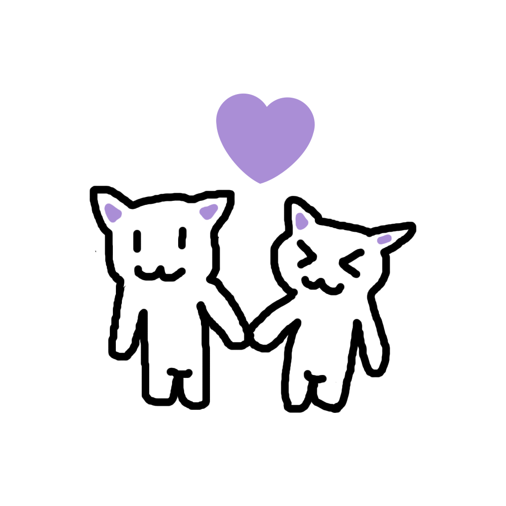

Neste dia, o quê eu queria mesmo era te entregar um cartãozinho na vida real, mas já que isso não é possível por enquanto, eu aproveitei que eu aprendi a criar sites recentemente e decidi fazer esse sitezinho como se fosse um cartãozinho pra você, eu até fiz um desenho representando a gente (não tô acostumado a desenhar com o mouse, então não julgue se o desenho estiver ruim ksks eu fiz com muito carinho, viu?)
Enfim, quero que você saiba que eu te amo mais do que tudo e eu agradeço muito por você ter aparecido na minha vida! Sério, eu não passo um único segundo sem estar pensando em você e é impressionante como a gente tem tanta coisa em comum, hehe aí eu te considero perfeito mesmo, meu femboyzin >:)
Por isso tudo, eu lhe desejo um:
Feliz Dia dos Namorados!!!
*Arraste para baixo

*Você consegue baixar o desenho clicando nele!
Feito com muito amor e carinho pelo o seu 'bobinhu', Yuri <3